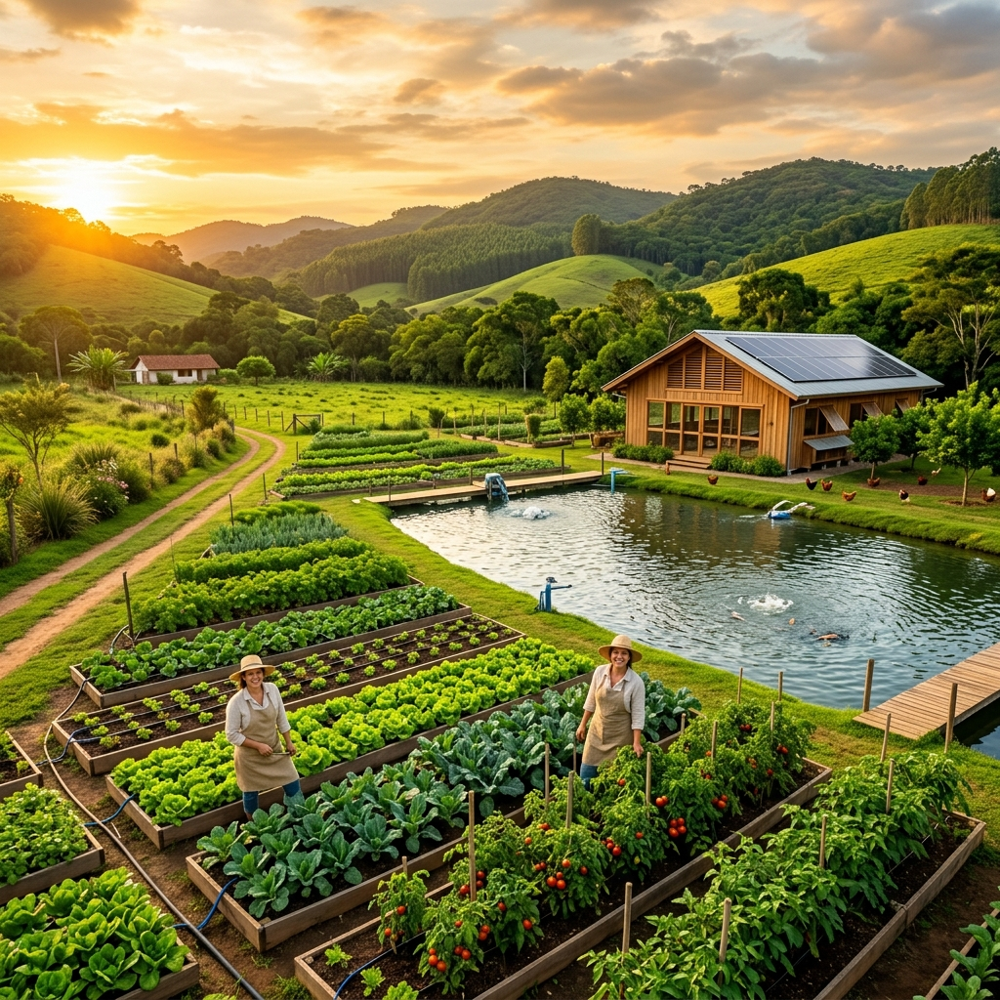
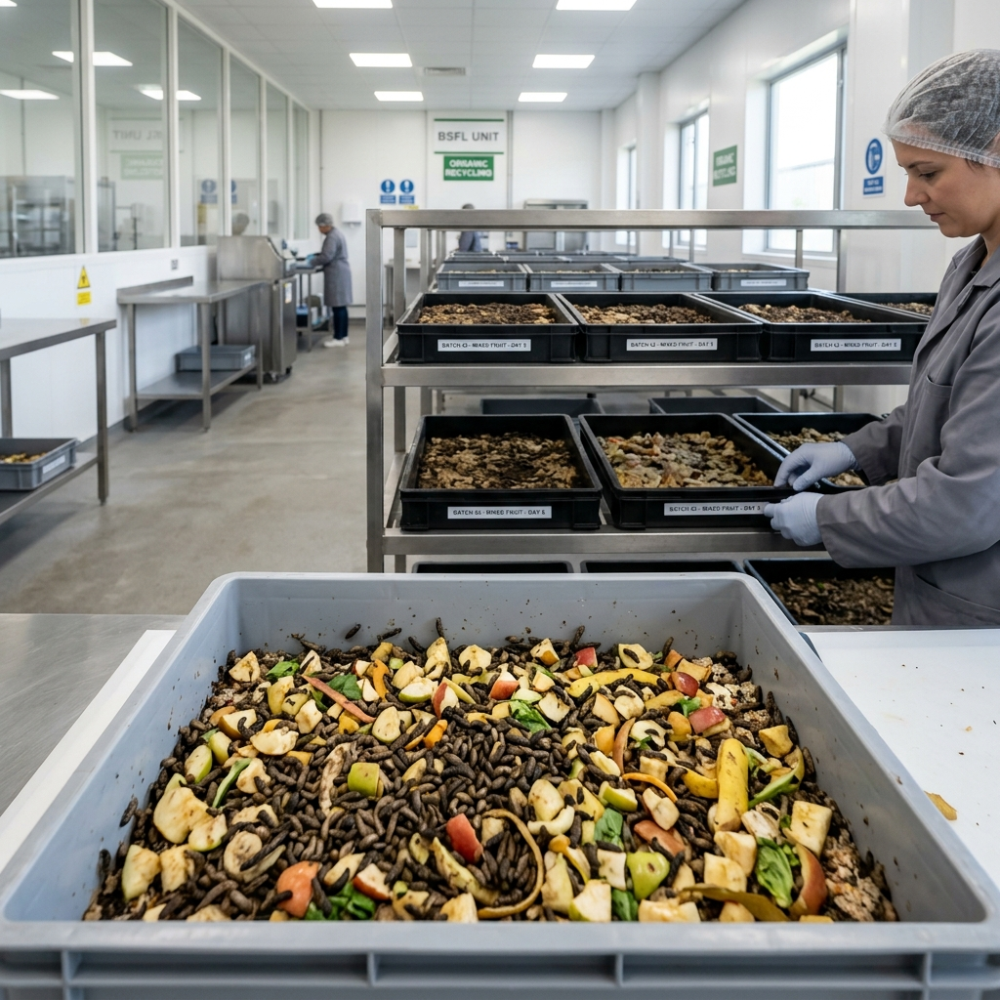
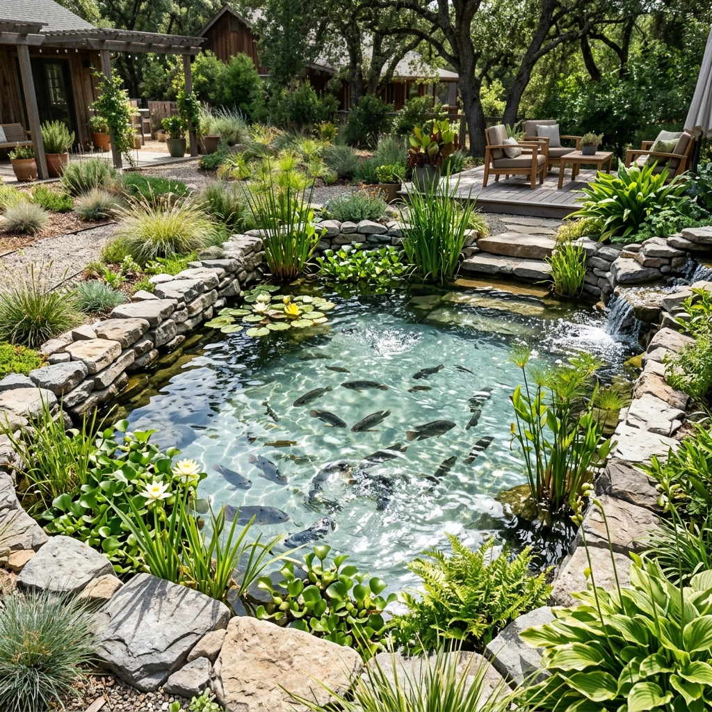
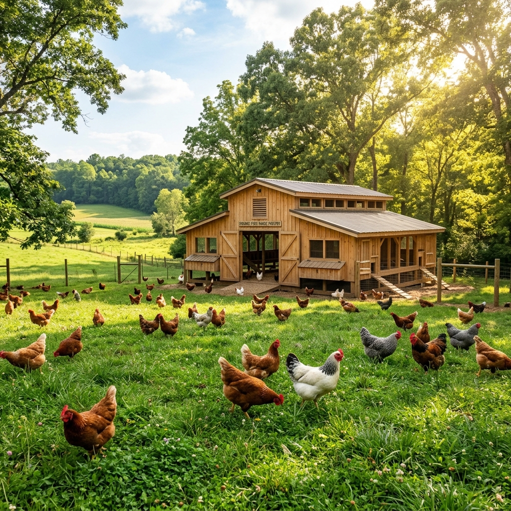
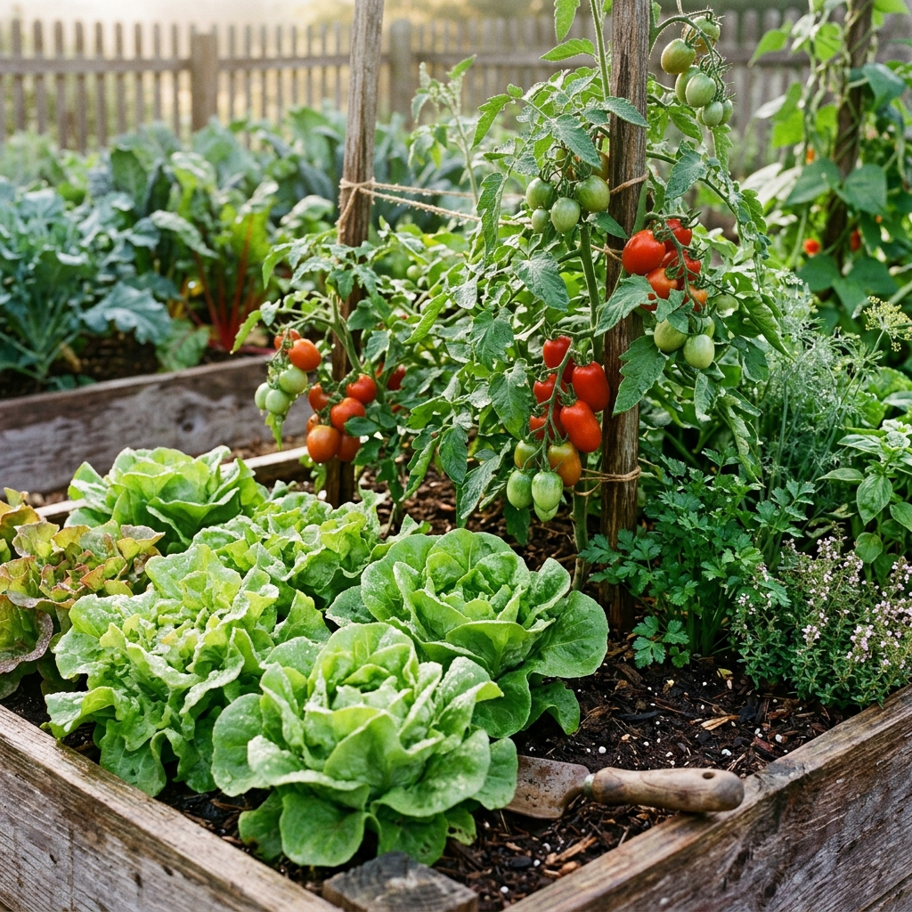
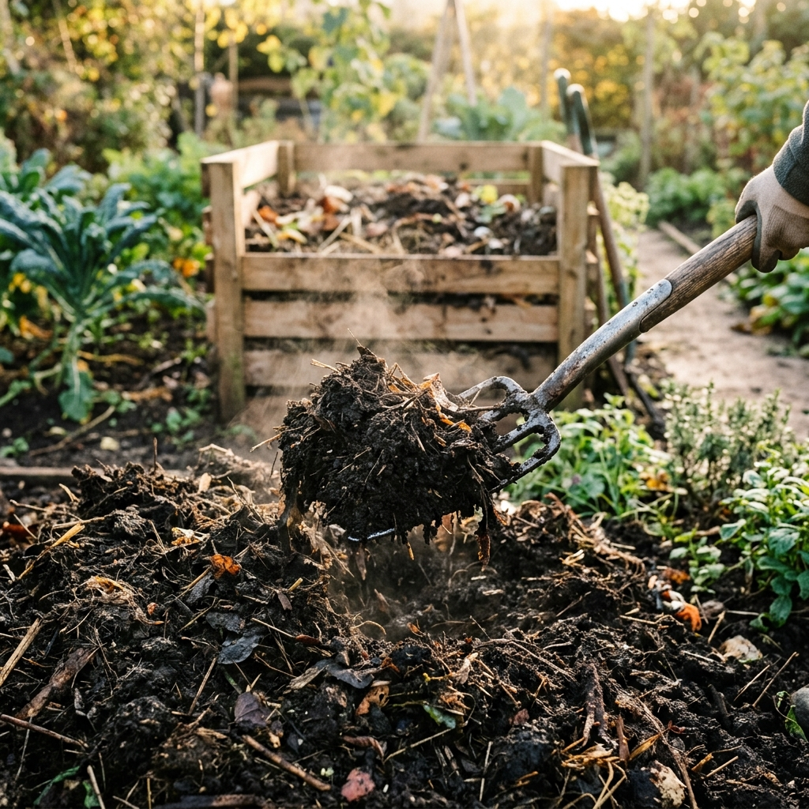

Integrasi Alam Menuju Kejayaan Hijau
Rumah Alam Jaya mengintegrasikan perkebunan organik dengan peternakan cacing/maggot, ayam, dan budidaya ikan nila dalam satu ekosistem zero-waste yang berkelanjutan.

100% Organik
Ekosistem Bebas Limbah
Pilar Bisnis Ekosistem Terpadu
Sinergi harmoni antara empat pilar pertanian dan peternakan demi menghasilkan produk bernilai tinggi sekaligus menjaga kelestarian alam.

PeternakanPeternakan Cacing & Maggot
Mengolah limbah organik peternakan ayam menjadi protein tinggi untuk pakan ternak berkualitas tinggi melalui Black Soldier Fly (BSF) larvae.
Pelajari Proses
Budidaya AirBudidaya Ikan Nila
Budidaya ikan air tawar di kolam sirkulasi ramah lingkungan, memanfaatkan sebagian pakan maggot organik untuk pertumbuhan ikan yang sehat.
Lihat Integrasi
PeternakanPeternakan Ayam
Peternakan ayam ras organik bebas stres dengan pakan alami, menghasilkan pupuk kandang mentah sebagai bahan baku utama kompos kebun.
Selengkapnya
PerkebunanPerkebunan Organik
Pertanian tanaman hortikultura subur yang ditutrisi langsung oleh pupuk organik kasgot (bekas maggot) dan kompos alami olahan mandiri.
Cara Berkebun0
Ton Sampah Diolah/Tahun
0
Butir Telur Organik / Bulan
0
Ton Nila Dipanen / Siklus
0
Varietas Sayur & Buah Organik
Menjaga Tradisi, Membangun Inovasi Agro-Farming
Rumah Alam Jaya lahir dari kepedulian yang mendalam terhadap isu ketahanan pangan nasional dan penumpukan limbah organik perkotaan serta peternakan. Kami meyakini bahwa solusi pertanian masa depan terletak pada konsep regenerasi tanah dan optimalisasi rantai nutrisi tertutup.
Berawal dari lahan sederhana, kami terus mengembangkan metode pertanian terpadu terpadu (Integrated Farming System) yang menggabungkan kecanggihan sains budidaya hayati dengan kebijaksanaan hukum alam. Melalui integrasi cacing/maggot, perikanan nila, peternakan unggas, dan perkebunan hortikultura, kami membuktikan bahwa bisnis berkelanjutan dapat membawa kejayaan finansial sekaligus keberkahan ekologis.
Visi Kami
Menjadi pelopor utama dan model agro-farming terintegrasi ramah lingkungan (zero-waste) skala nasional yang menginspirasi pemuda dan masyarakat untuk bertani secara mandiri, sehat, dan menguntungkan.
Misi Kami
- Memproduksi pakan, ikan, unggas, dan sayuran organik berkualitas premium yang terjangkau bagi publik.
- Mengembangkan teknologi pengomposan biologis yang efektif mengurangi limbah karbon global secara signifikan.
- Mengedukasi masyarakat melalui kurikulum pelatihan pertanian modern berkonsep sirkuler.
- Memastikan regenerasi kesuburan tanah dengan pupuk organik organik alami kasgot.
Tujuan Mendalam (Deep Purpose)
Rumah Alam Jaya tidak sekadar berorientasi pada profit, melainkan sebuah gerakan restorasi alam. Tujuan mendalam kami adalah **memutus mata rantai ketergantungan pupuk kimia sintetis** serta **mengeliminasi limbah organik dari industri pangan**.
Dalam siklus terintegrasi kami:
- Limbah pertanian & kotoran ayam diolah oleh maggot/cacing menjadi kasgot subur.
- Maggot dipanen sebagai pakan kaya protein untuk ayam dan nila (menghemat 60% biaya pakan biasa).
- Air kolam nila bernutrisi tinggi dialirkan untuk menyiram tanaman perkebunan.
- Tanaman perkebunan menghasilkan oksigen, buah sehat, dan limbah hijau yang masuk kembali ke rantai kompos.
Sinergi
Galeri Kegiatan & Panduan Teknis
Saksikan aktivitas harian di Rumah Alam Jaya serta pelajari modul panduan praktis untuk mempraktikkan gaya hidup sirkuler di rumah Anda.
Panen Raya Hortikultura Organik
Kegiatan mingguan pemetikan selada, tomat ceri, dan bayam Jepang dari perkebunan Rumah Alam Jaya yang mendapat nutrisi optimal dari kasgot organik.
Edukasi Budidaya Larva BSF (Maggot)
Dokumentasi penyusunan rak biopond bersih menggunakan limbah buah pasar untuk mempercepat pertumbuhan larva sebelum dipanen menjadi pakan ayam.

Mei 2026Fermentasi Cepat Pupuk Padat Kasgot
Aktivitas pencampuran kotoran ayam kering dengan dedak halus dan starter EM4 biologis dalam wadah kedap untuk menghasilkan kompos premium.
Panduan Praktis Rumah Alam Jaya
Mari turut serta mempraktikkan konsep sirkuler secara mandiri. Berikut adalah langkah praktis yang telah kami standarisasikan.
Pembuatan Kandang Lalat BSF
Buat kandang jaring berukuran minimal 1x1x2 meter yang terpapar cahaya matahari pagi agar merangsang perkawinan lalat BSF jantan dan betina.
Penyediaan Media Bertelur (Eggets)
Susun potongan kayu kecil/papan tipis yang diberi celah di atas media umpan bau (dedak basah + penyedap rasa) untuk merangsang lalat betina bertelur di sela kayu.
Penetasan Telur & Pembesaran Larva
Pindahkan telur dari sela kayu ke nampan kecil berisi dedak basah halus selama 3-4 hari. Setelah lalat menetas menjadi larva kecil, beri limbah buah dan sayuran cincang dalam wadah biopond beratap.
Panen Maggot & Pengolahan Sisa (Kasgot)
Panen maggot segar pada hari ke-15 hingga ke-21 sebelum berubah menjadi prepupa hitam. Pisahkan maggot dengan sisa pakan yang telah hancur (kasgot). Sisa kasgot langsung siap dijadikan pupuk.
Kumpulkan Bahan Cokelat & Hijau
Siapkan rasio bahan nitrogen tinggi/hijau (kotoran ayam, sisa sayur kebun) sebesar 1 bagian, dan karbon tinggi/cokelat (daun kering, serbuk gergaji, sekam) sebesar 2 bagian.
Pencacahan & Pencampuran Starter
Cacah bahan kebun menjadi bagian kecil (2-5 cm). Larutkan 10 ml cairan EM4 (starter mikroba) dan 1 sendok gula ke dalam 1 liter air hangat, biarkan selama 15 menit, lalu siramkan perlahan ke campuran kompos.
Menjaga Kelembapan di Komposter
Masukkan adonan kompos ke wadah tong komposter berlubang sirkulasi udara. Pastikan tingkat kebasahan seperti spons basah yang diperas (sekitar 50-60% kelembapan).
Pembalikan Rutin & Pematangan
Balik tumpukan kompos seminggu sekali agar mendapat pasokan oksigen yang cukup. Dalam waktu 4-6 minggu, kompos akan matang ditandai dengan warna gelap, berbau tanah segar, dan suhu turun normal.
Pemilihan Benih & Persemaian
Pilihlah benih sayuran unggul F1 seperti kangkung, pakcoy, selada, atau cabai rawit. Semai di baki semai kecil menggunakan media tanah campur kasgot (1:1).
Penyiapan Wadah / Vertikultur
Manfaatkan botol plastik bekas, talang air, atau pot gantung vertikal untuk menghemat tempat di pekarangan rumah atau dinding semen.
Pemberian Nutrisi Cair & Penyiraman
Siram tanaman dua kali sehari (pagi dan sore). Berikan Pupuk Organik Cair (POC) buatan sendiri dari rendaman sisa sayur/maggot seminggu sekali untuk merangsang daun lebat.
Hubungi Kami & Kemitraan
Rumah Alam Jaya membuka peluang kolaborasi, magang pertanian sirkuler, penyediaan pupuk kasgot skala besar, serta suplai pakan ternak.
Mari Terhubung!
Kunjungi peternakan dan perkebunan kami secara langsung untuk berdiskusi, membeli produk organik segar, atau menjajaki peluang bisnis.
Alamat Peternakan Terpadu
Jl. Raya Alam Asri No. 45, RT 02/05, Desa Sukamaju, Kec. Cisarua, Jawa Barat
WhatsApp Hotline
+62 812-3456-7890 (Kemitraan/Penjualan)
Jam Kunjungan Lahan
Setiap Hari: 08.00 - 17.00 WIB (Dengan Perjanjian)
Kirim Pesan Langsung
Rumah Alam Jaya
Kawasan Wisata Agro & Peternakan Terpadu Cisarua, Jawa Barat